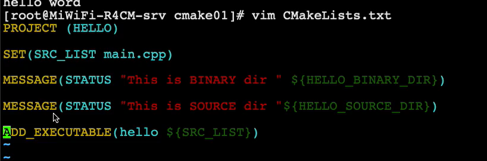

CMake¶
==cmake_minimum_required== - 指定CMake的最小版本要求¶
语法： cmake_minimum_required(VERSION versionNumber [FATAL_ERROR])
# CMake最小版本要求为2.8.3
cmake_minimum_required(VERSION 2.8.3)
==project== - 定义工程名称，并可指定工程支持的语言¶
语法： project(projectname [CXX] [C] [Java])
#可以用来指定工程的名字和支持的语言，默认支持所有语言
PROJECT (HELLO) 指定了工程的名字，并且支持所有语言—建议
PROJECT (HELLO CXX) 指定了工程的名字，并且支持语言是C++
**PROJECT (HELLO C CXX) 指定了工程的名字，并且支持语言是C和C++**
该指定隐式定义了两个CMAKE的变量
<projectname>_BINARY_DIR，本例中是 HELLO_BINARY_DIR
<projectname>_SOURCE_DIR，本例中是 HELLO_SOURCE_DIR
**MESSAGE关键字就可以直接使用者两个变量，当前都指向当前的工作目录**，后面会讲外部编译
问题：如果改了工程名，这两个变量名也会改变
解决：又定义两个预定义变量：**PROJECT_BINARY_DIR和PROJECT_SOURCE_DIR**，这两个变量和HELLO_BINARY_DIR，HELLO_SOURCE_DIR是一致的。所以改了工程名也没有关系
==set==- 显式的定义变量¶
语法：set(VAR [VALUE] [CACHE TYPE DOCSTRING [FORCE]]) 如果源文件名中含有空格，就必须要加双引号
# 定义SRC变量，其值为sayhello.cpp hello.cpp
set(SRC sayhello.cpp hello.cpp)
==include_directories== - 向工程添加多个 ==特定的头文件== 搜索路径 —>相当于指定g++编译器的-I参数¶
语法： include_directories([AFTER|BEFORE] [SYSTEM] dir1 dir2 …)
# 将/usr/include/myincludefolder 和 ./include 添加到头文件搜索路径
include_directories(/usr/include/myincludefolder ./include)
├── CMakeLists.txt #最外层的CMakeList.txt
├── main.cpp #源文件，包含被测试的头文件
├── sub #子目录
└── test.h #测试头文件，是个空文件，被外层的main,cpp包含
场景2：使用include_directories包含子目录sub,并在main.cpp里面包含"test.h"。
# CMakeList.txt
cmake_minimum_required(VERSION 3.18.2)
project(include_directories_test)
include_directories(sub) #与上个场景不同的地方在于此处
add_executable(test main.cpp)
//main.cpp
#include "test.h"
#include <stdio.h>
int main(int argc, char **argv)
{
printf("hello, world!\n");
return 0;
==link_directories== - 向工程添加多个 ==特定的库文件== 搜索路径 —>相当于指定g++编译器的-L参数¶
语法： link_directories(dir1 dir2 …)
# 将/usr/lib/mylibfolder 和 ./lib 添加到库文件搜索路径
link_directories(/usr/lib/mylibfolder ./lib)
==add_library== - 生成库文件¶
语法： add_library(libname [SHARED|STATIC|MODULE] [EXCLUDE_FROM_ALL]source1 source2 … sourceN)
# 通过变量 SRC 生成 libhello.so 共享库
add_library(hello SHARED ${SRC})
ADD_LIBRARY(hello SHARED ${ LIBHELLO_SRC})
hello：就是正常的库名，生成的名字前面会加上lib，最终产生的文件是libhello.so
SHARED，动态库 STATIC，静态库
${LIBHELLO_SRC} ：源文件
构建实例¶
任务：
１，建立一个静态库和动态库，提供 HelloFunc 函数供其他程序编程使用，HelloFunc 向终端输出 Hello World 字符串。
２，安装头文件与共享库。
看code 构建静态和动态库
1. 构建静态和动态库¶
[root@localhost cmake2]# tree
.
├── build
├── CMakeLists.txt
└── lib
├── CMakeLists.txt
├── hello.cpp
└── hello.h
hello.h中的内容
#ifndef HELLO_H
#define Hello_H
void HelloFunc();
#endif
hello.cpp中的内容
#include "hello.h"
#include <iostream>
void HelloFunc(){
std::cout << "Hello World" << std::endl;
}
项目中的cmake内容
PROJECT(HELLO)
ADD_SUBDIRECTORY(lib bin)
lib中CMakeLists.txt中的内容
SET(LIBHELLO_SRC hello.cpp)
ADD_LIBRARY(hello SHARED ${LIBHELLO_SRC})
自动生成在 build/bin(自动创建的) 中
hello：就是正常的库名，生成的名字前面会加上lib，最终产生的文件是libhello.so
SHARED，动态库 STATIC，静态库
${LIBHELLO_SRC} ：源文件
同时构建静态和动态库
用到 SET_TARGET_PROPERTIES
这条指令可以用来设置输出的名称，对于动态库，还可以用来指定动态库版本和 API 版本
同时构建静态和动态库
lib中CMakeLists.txt中的内容:
SET(LIBHELLO_SRC hello.cpp)
// 静态
ADD_LIBRARY(hello_static STATIC ${LIBHELLO_SRC})
//对hello_static的重名为hello
SET_TARGET_PROPERTIES(hello_static PROPERTIES OUTPUT_NAME "hello")
//cmake 在构建一个新的target 时，会尝试清理掉其他使用这个名字的库，因为，在构建 libhello.so 时， 就会清理掉 libhello.a
SET_TARGET_PROPERTIES(hello_static PROPERTIES CLEAN_DIRECT_OUTPUT 1)
// 动态
ADD_LIBRARY(hello SHARED ${LIBHELLO_SRC})
SET_TARGET_PROPERTIES(hello PROPERTIES OUTPUT_NAME "hello")
SET_TARGET_PROPERTIES(hello PROPERTIES CLEAN_DIRECT_OUTPUT 1)
动态库的版本号
一般动态库都有一个版本号的关联
libhello.so.1.2
libhello.so ->libhello.so.1
libhello.so.1->libhello.so.1.2
CMakeLists.txt 插入如下
SET_TARGET_PROPERTIES(hello PROPERTIES VERSION 1.2 SOVERSION 1)
VERSION 指代动态库版本，SOVERSION 指代 API 版本
2. 安装头文件 和 共享库¶
动态库和静态库需要安装头文件
将在lib里的 hello.h 安装到 usr/include/hello 目录
给动态库和静态库需要安装头文件. 将 hello 的共享库安装到 usr/lib目录，
lib中的继续添加cmake内容
//文件放到该目录下
INSTALL(FILES hello.h DESTINATION include/hello)
//这里的include应该是自动创建在当前Cmakelist所在目录
//二进制，静态库，动态库安装都用TARGETS
//ARCHIVE 特指静态库，LIBRARY 特指动态库，RUNTIME 特指可执行目标二进制。
INSTALL(TARGETS hello hello_static LIBRARY DESTINATION lib ARCHIVE DESTINATION lib)
注意：
安装的时候，指定一下路径，放到系统下
在build下:
cmake -D CMAKE_INSTALL_PREFIX=/usr ..
具体过程
3. 使用¶
新建一个目录来使用外部共享库和头文件
[root@MiWiFi-R4CM-srv cmake3]# tree
.
├── build
├── CMakeLists.txt
└── src
├── CMakeLists.txt
└── main.cpp
main.cpp
#include <hello.h> // 使用动态库
int main(){
HelloFunc(); // 使用动态库
}
src里的camke
INCLUDE_DIRECTORIES(/usr/include/hello) // 动态库的头文件
ADD_EXECUTABLE(hello main.cpp)
TARGET_LINK_LIBRARIES(hello libhello.so) //动态库的lib文件
项目下的:
PROJECT(HELLO)
CMAKE_MINIMUM_REQUIRED(VERSION 2.8.3)
ADD_SUBDIRECTORY(src bin)
解决:
mv /usr/lib/libhello.so /usr/lib64/
==add_compile_options== - 添加编译参数¶
语法：add_compile_options(
# 添加编译参数 -Wall -std=c++11 -O2
add_compile_options(-Wall -std=c++11 -O2)
==add_executable==- 生成可执行文件¶
语法：add_executable(exename source1 source2 … sourceN)
# 编译main.cpp 生成 可执行文件main
add_executable(main main.cpp)
生成的可执行文件名是hello，源文件读取变量SRC_LIST中的内容 注意：工程名的 HELLO 和生成的可执行文件 hello 是没有任何关系的
也可以直接写 ADD_EXECUTABLE(hello main.cpp)

==target_link_libraries== - 为 target 添加需要链接的共享库 —>相同于指定g++编译器-l参数¶
语法： target_link_libraries(target library1<debug | optimized> library2…)
# 将hello动态库文件链接到可执行文件main
target_link_libraries(main hello) //hello是生成的库文件
==add_subdirectory== - 向当前工程添加存放源文件的子目录，指定 中间 和 目标的二进制存放的位置¶
语法： add_subdirectory(source_dir [binary_dir] [EXCLUDE_FROM_ALL])
#添加包含CMakeLists.txt和源文件的子目录 —> 相当于把整个文件变成一个.cpp文件
# 添加src子目录，src中需有一个CMakeLists.txt
add_subdirectory(src)
ADD_SUBDIRECTORY(src bin)
将 src 子目录加入工程并指定编译输出(包含编译中间结果)路径为bin 目录
如果不进行 bin 目录的指定，那么编译结果(包括中间结果)都将存放在build/src 目录
==aux_source_directory== - 发现一个目录下所有的源代码文件并将列表存储在一个变量中，这个指令临时被用来自动构建源文件列表¶
语法： aux_source_directory(dir VARIABLE)
# 定义SRC变量，其值为当前目录下所有的源代码文件
aux_source_directory(. SRC)
# 编译SRC变量所代表的源代码文件，生成main可执行文件
add_executable(main ${SRC})

aux_source_directory（目录 存放文件列表的变量）
例如我们想搜索当前目录下的所有cpp则为
aux_source_directory(. CPP_LIST)
但是这个命令只会仅仅搜索当前目录下的文件（即tool2.cpp），tool1目录中无法搜索到，有两种解决办法：
1:再增加一个aux_source_directory(./tool1 CPP_LIST2)，即可成功编译
2.使用cmake单独将tool1文件夹编译为一个so
具体步骤：
1.在tool1文件夹中新建一个CMakeLists.txt ,其中内容为：
aux_source_directory(. tool1_file) #查找当前目录下的tool1相关文件
add_library(tool1lib ${tool1_file}) #将他们编译为一个叫tool1lib的文件
2.主目录的cmakelists修改为：
cmake_minimum_required(VERSION 2.6) #指定cmake最低版本为2.6
project(FirstCmakeDemo) #指定工程名称
aux_source_directory(. CPP_LIST) #搜索当前目录下的所有cpp文件
add_subdirectory(tool1) #将tool1文件夹加入子目录,这样他就可以去tool1文件夹中查找编译
add_executable(out_file ${CPP_LIST}) #生成目标文件
target_link_libraries(out_file tool1lib)
#添加链接库,其库的名字由tool1文件夹中的CMakeLists.txt来指定生成
CMake常用变量¶
CMAKE_C_FLAGS gcc编译选项 // c语言
CMAKE_CXX_FLAGS g++编译选项 // c++
# 在CMAKE_CXX_FLAGS编译选项后追加-std=c++11
set( CMAKE_CXX_FLAGS "${CMAKE_CXX_FLAGS} -std=c++11")
CMAKE_BUILD_TYPE 编译类型(Debug, Release)
# 设定编译类型为debug，调试时需要选择debug
set(CMAKE_BUILD_TYPE Debug)
# 设定编译类型为release，发布时需要选择release
set(CMAKE_BUILD_TYPE Release)
CMAKE_BINARY_DIR
PROJECT_BINARY_DIR _BINARY_DIR
这三个变量指代的内容是一致的。
如果是 in source build，指的就是工程顶层目录。
如果是 out-of-source 编译,指的是工程编译发生的目录。
PROJECT_BINARY_DIR 跟其他指令稍有区别，不过现在，你可以理解为他们是一致 的。
CMAKE_SOURCE_DIR
PROJECT_SOURCE_DIR _SOURCE_DIR
这三个变量指代的内容是一致的,不论采用何种编译方式,都是工程顶层目录。
也就是在 in source build时,他跟 CMAKE_BINARY_DIR 等变量一致。
PROJECT_SOURCE_DIR 跟其他指令稍有区别,现在,你可以理解为他们是一致的。
CMAKE_C_COMPILER：指定C编译器 CMAKE_CXX_COMPILER：指定C++编译器 EXECUTABLE_OUTPUT_PATH：可执行文件输出的存放路径 LIBRARY_OUTPUT_PATH：库文件输出的存放路径
CMake编译工程¶
CMake目录结构：项目主目录存在一个CMakeLists.txt文件 两种方式设置编译规则：
包含源文件的子文件夹包含CMakeLists.txt文件，主目录的CMakeLists.txt通过add_subdirectory 添加子目录即可；
包含源文件的子文件夹未包含CMakeLists.txt文件，子目录编译规则体现在主目录的 CMakeLists.txt中； 6.4.1 编译流程 在 linux 平台下使用 CMake 构建C/C++工程的流程如下: 手动编写 CMakeLists.txt。 执行命令 cmake PATH 生成 Makefile ( PATH 是顶层CMakeLists.txt 所在的目录 )。 执行命令make 进行编译。 6.4.2 两
内部构建和外部构建¶
内部构建:

cmake .
make

外部构建 :
进入build文件 camke ..
cmake 点点”表示在上一级目录(CMakeLists.txt所在目录)编译
外部构建¶
将编译输出文件与源文件放到不同目录中
## 外部构建
# 1. 在当前目录下，创建build文件夹
mkdir build
# 2. 进入到build文件夹
cd build
# 3. 编译上级目录的CMakeLists.txt，生成Makefile和其他文件
cmake ..
# 4. 执行make命令，生成target
make
make
把所有生成文件都放在build目录中

多文件

例子2:

配置VSCode的json文件并调试项目¶
xiaobing
多文件编译¶
看文件 mutil
cmake_minimum_required(VERSION 3.0)
project(MUTIL)
#设置hello world 给环境变量TARGET
set(TARGET helloworld)
#添加头文件 -- 有.h的地方
include_directories(
hello
world
)
#添加包含CMakeLists.txt和源文件的子目录
add_subdirectory(hello)
add_subdirectory(world)
aux_source_directory(. DIRSRCS)
#生成可执行文件
add_executable(${TARGET} ${DIRSRCS})
#helloworld 链接静态库hello和world
target_link_libraries(${TARGET} hello world)
#把指定目录下所有源代码和头文件文件入变量DIR_HELLO “.”是指cmakelists文件当前目录
aux_source_directory(. DIR_HELLO)
#从${DIR_HELLO}文件中生成hello库, STATIC是生成静态库
add_library(hello STATIC ${DIR_HELLO})
aux_source_directory(. DIR_WORLD)
add_library(world STATIC ${DIR_WORLD})
案例2
SheepMarket
├─ .vscode
│ ├─ c_cpp_properties.json
│ ├─ launch.json
│ ├─ settings.json
│ └─ tasks.json
├─ build
│ ├─ fontcolor.exe
│ ├─ init.exe
│ ├─ main.exe
│ └─ menu.exe
├─ CMakeLists.txt
├─ include
│ ├─ Administrator.h
│ ├─ consumer .h
│ ├─ fontcolor.h
│ ├─ init.h
│ ├─ menu.h
│ └─ system.h
├─ src
├ ├─ CMakeLists.txt
│ ├─ Administrator.cpp
│ ├─ consumer .cpp
│ ├─ fontcolor.cpp
│ ├─ init.cpp
│ ├─ main.cpp
│ ├─ menu.cpp
│ └─ system.cpp
└─ 功能总览.md
cmake_minimum_required(VERSION 3.0)
project(SHEEPMARKET)
set(TARGET main)
include_directories(${PROJECT_SOURCE_DIR}/include)
aux_source_directory(. DIRSRC)
add_subdirectory(${PROJECT_SOURCE_DIR}/src)
add_executable(${TARGET} ${DIRSRC})
target_link_libraries(${TARGET} src)
aux_source_directory(. DIRSRCS)
/include_directories(${PROJECT_SOURCE_DIR}/include)
add_library(src STATIC ${DIRSRCS})